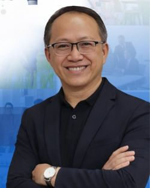

Father: ALDRIN BAHIT
My father is a first generation member of the church, though being in a family with upt to 12 members, he was the only member to this day. He met the missionaries during his time in college. His main intention for meeting the missionaries were to challenge them to his many questions. But during the lessons, he was impressed by how they were able to answer and without question got baptized. He studied statistics and works in the Philippines Statistics Authority as a chief statistician. He is also currently serving as a senior service missionary for BYU-Pathway Worldwide alongside my mother and also he is also the current Bishop of our ward in the Quezon Hill Ward, Baguio Philippines Stake.
I find his faith in the Lord inspirational, not only did he excel in the academic field, unlike others in his field at that time, he was humble enough to receieve the teachings of the gospel. I am lucky to have him as my father and take after him through his continous faith to serve the Lord.
Mother: MAREYDEL BAHIT
My mother is a second generation memeber, she was baptized around her teens when my grnadparents met with the missionaries. She is currently serving as a senior service missionary for BYU-Pathway alongside my father. They are also called as the Area Coordinators, which by it's nature, a very busy calling for both of them. Considering my father is the breadwinner of the family, aside from being a senior service missionary and Bishop, my mother assists in every way that she can. And because of that, my mother ends up doing mmost of the senior service missionary work. She also loves cooking and all she learns to cook international meals, she is the same reason I gain much weight, her cooking is just that good.
I find great inspiration in my mothers commitment and support for my father and us siblings. Through her, I find myself emulating the same care she has for us and because she loves cooking, I also aquired an inspiration for the art of food. I admire my mother for her continuous effort and unceassing love.
Older Sister: NAYA BAHIT
The favorite daughter, she is 3 years older than me. she is also currently studying in BYU-Hawaii, majoring in Psycology. She served her mission in the Philippines Tacloban Mission, and can speak in 5 languages; English, Tagalog, Ilocano, Waray, and Cebuano/Bisaya. She loves theatre, dancing and music, which she definitely took after our father. She has an obsession with the girl group BINI, and could name all the members with their additional personality traits. She is also a writter, which is funny becasue she has Aphantasia, which is a the inability to picture things in your head. She has more of the chinese genes, thus having more chinese features.
My sister is an inspiration to me as she is the most forgiving person I know. There were people who have done such harsh things to her and she had simply forgave them as if it never had happned. Such things I cannot do. She also heavily influence my empathic ability.
Younger Brother: YLIAM BAHIT
The youngest child and also my younger brother. Unlike me and my sister, he is the sporty type. His main sport is volleyball and he loves the anime Haikyuu. He is currently studying under a scholarship in Philippines Science High School. He has the highest IQ among us 3 siblings. Just like me, he also likes playing video games and we bond over it. He has dated more girls than me and has been asked out by more girls than me. He also likes collecting Hotwheels, he has a pretty decent collection. He is also very fashionable, more so than me and my sister. I usually go to him for fashion advice. He has more of the Filipino genes, thus having more filipino features.
My younger brother has become an inspiration to me to become the best and most caring older brother. He has inpired me to imporve and to understand. Growing up with him became a major part of my personal and spiritual development